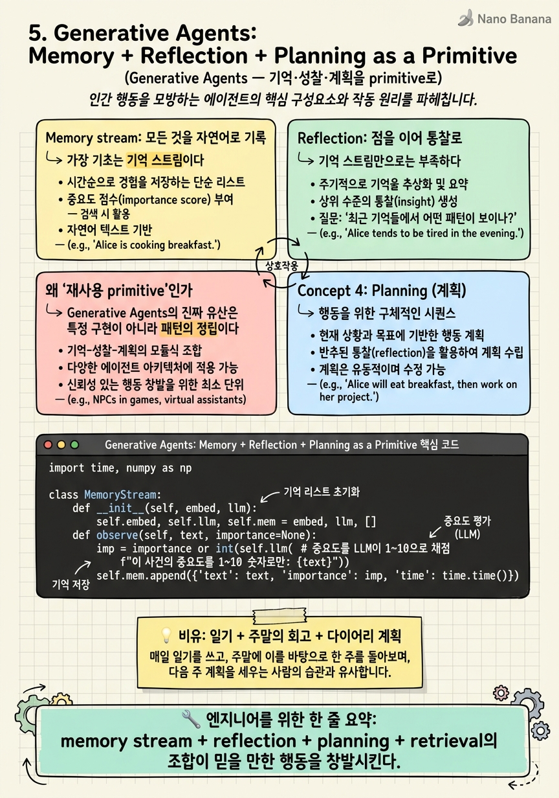

Generative Agents: Memory + Reflection + Planning as a Primitive

🎯 학습 목표
- memory stream · reflection · planning · retrieval 네 요소의 역할과 상호작용을 설명한다
- retrieval의 recency·importance·relevance 삼중 점수 메커니즘을 이해한다
- 낮은 수준 관찰을 고수준 통찰로 합성하는 reflection의 필요성을 안다
- 이 아키텍처가 왜 '재사용 가능한 primitive'로 불리는지 설명한다
- 4장 skill 메모리와 5장 경험 메모리의 목적 차이를 구분한다
4장 Voyager가 '무엇을 할 줄 아는가(skill)'를 기억했다면, Generative Agents(Park et al., UIST 2023)는 '무엇을 겪었고 그래서 어떻게 행동할까'를 기억한다. 스탠퍼드와 구글이 만든 이 실험은 25명의 LLM 에이전트를 작은 마을(Smallville)에 풀어놓았다. 그들은 아침을 차리고, 출근하고, 수다를 떨고, 심지어 한 에이전트가 발렌타인 파티를 기획하자 소문이 퍼지고 사람들이 모여든다 — 아무도 시나리오를 짜주지 않았는데 말이다.
이 '믿을 만한 인간적 행동(believable behavior)'은 어디서 나올까? 논문의 답은 하나의 인지 아키텍처다. 세 개의 기둥으로 이루어진다.
(1) Memory stream — 겪은 모든 것을 자연어로 시간순 기록. (2) Reflection — 그 낱낱의 기억을 주기적으로 '고수준 통찰'로 합성. (3) Planning & retrieval — 기억을 꺼내 계획을 세우고 행동으로 옮김. 이 memory→reflection→planning 삼각형이 이후 Lilian Weng의 정전급 에이전트 에세이를 비롯해 수많은 프레임워크가 베낀 재사용 primitive가 됐다. 이 장에서 우리는 '에이전트의 인지 구조' 그 자체를 설계하는 법을 배운다.
핵심 내용
Memory stream: 모든 것을 자연어로 기록
가장 기초는 기억 스트림이다. 에이전트가 관찰하거나 행동한 모든 것을 자연어 문장으로, 타임스탬프와 함께 길게 쌓는다.
"store a complete record of the agent's experiences using natural language."
"오전 8시, 부엌에서 커피를 내렸다", "오전 8시 10분, 이웃 John을 마주쳐 인사했다" 같은 식이다. 문제는 이게 금세 수천 개로 불어난다는 것. 매 순간 이 전부를 컨텍스트에 넣을 순 없다.
그래서 검색(retrieval) 이 핵심이 된다. Generative Agents는 각 기억에 세 점수를 매겨 지금 상황에 꺼낼 것을 고른다.
| 점수 | 의미 | 예 |
|---|---|---|
| Recency | 최근일수록 높음 | 방금 일은 잘 떠오름 |
| Importance | 중요한 사건일수록 높음 | '이사했다' > '양치했다' |
| Relevance | 현재 질문과 의미적으로 가까울수록 높음 | 임베딩 유사도 |
세 점수의 가중합으로 상위 기억을 뽑아 컨텍스트에 넣는다. 이 recency+importance+relevance 공식은 오늘날 거의 모든 장기기억 에이전트가 변형해 쓰는 표준 레시피가 됐다.
Reflection: 점을 이어 통찰로
기억 스트림만으로는 부족하다. '커피를 내렸다', 'John과 인사했다' 같은 낱개 사실은 있지만, '나는 이웃과 잘 지내는 사교적인 사람이다' 같은 추상적 자기이해는 없다. 낱개 관찰만 검색해선 일관된 인격이 안 나온다.
그래서 논문은 reflection(성찰) 을 도입한다.
"synthesize those memories over time into higher-level reflections."
주기적으로(중요도가 임계치를 넘으면) 에이전트는 최근 기억을 훑고 스스로 묻는다: "이 관찰들로부터 내릴 수 있는 고수준 결론은 무엇인가?" 그 답('나는 Klaus라는 인물의 연구를 존경한다' 같은)을 다시 기억 스트림에 새로운 고수준 기억으로 저장한다. 이 성찰은 또 다른 성찰의 재료가 되어, 기억이 트리처럼 추상화된다.
핵심은 이것이 3장 Reflexion과 목적이 다르다는 점이다. Reflexion의 반성은 '실패를 고치기 위한' 것이지만, 여기 reflection은 '흩어진 경험을 일관된 세계관·자아로 통합하기 위한' 것이다. 전자는 성능, 후자는 정체성을 위한 성찰이다. 이 합성 능력이 있어야 에이전트가 그때그때 즉흥적이지 않고 '캐릭터답게' 일관되게 행동한다.
왜 '재사용 primitive'인가
Generative Agents의 진짜 유산은 특정 구현이 아니라 패턴의 정립이다. memory + reflection + planning + retrieval이라는 네 부품의 조합이, 이후 에이전트를 설계하는 사람들의 기본 청사진이 됐다.
Lilian Weng의 널리 인용되는 에이전트 개관 글은 에이전트를 'LLM(두뇌) + Planning + Memory + Tool use'로 정리하는데, 이 Memory와 Planning의 내용물이 바로 Generative Agents에서 왔다. AgentPatterns 같은 카탈로그도 이를 명명된 패턴으로 등재했다.
왜 이렇게 널리 베껴졌을까? 일반성 때문이다. 마인크래프트의 Voyager는 도메인(게임)에 묶여 있지만, Generative Agents의 인지 아키텍처는 '경험을 쌓고·통합하고·그로부터 계획하는' 어떤 에이전트에도 적용된다 — 고객 지원 봇이든, 개인 비서든, 코딩 에이전트든. 도메인 독립적인 '에이전트 마음의 골격'을 처음으로 명료하게 제시한 것이다.
loop engineering의 관점에서 보면, 이 장은 루프에 붙일 수 있는 기억 서브시스템의 완성형 설계도를 준다. 2장이 루프의 몸통, 3장이 반성, 4장이 skill 창고였다면, 5장은 그 모든 걸 아우르는 '장기기억 + 자아' 아키텍처다. 8장부터 루프가 그래프로 펼쳐질 때, 이 기억 primitive는 그래프의 상태(state)로 자연스럽게 흡수된다.
💡 비유로 이해하기
한 사람의 정신적 삶을 생각해보자. 먼저 일기(memory stream) 가 있다. 매일 있었던 일을 시시콜콜 적는다 — 누굴 만났고, 뭘 먹었고, 무슨 생각을 했는지. 방대하지만, 매 순간 이 일기 전체를 떠올리며 살진 않는다. 지금 상황에 맞는 몇 페이지만 펼쳐본다(retrieval) — 최근 것, 중요한 것, 지금 고민과 관련된 것 위주로.
그런데 일기만 쓰면 삶이 파편적이다. 그래서 주말마다 회고(reflection) 를 한다. 한 주의 일기를 훑고 '아, 나는 요즘 이 프로젝트에 진심이구나', '저 사람과는 거리를 두는 게 낫겠다' 같은 큰 깨달음을 뽑아, 그 통찰을 다시 일기에 굵은 글씨로 적어둔다. 이 회고가 흩어진 나날을 '나'라는 일관된 인격으로 꿰맨다.
마지막으로, 이 일기와 회고를 바탕으로 내일의 계획(planning) 을 짠다. 계획은 허공이 아니라 '내가 겪고 깨달은 것' 위에 선다. 이 일기 → 회고 → 계획의 순환이 바로 Generative Agents의 인지 아키텍처다. 그리고 이 순환은 스몰빌 주민에게만 필요한 게 아니다 — 며칠에 걸쳐 한 프로젝트를 돕는 코딩 에이전트에게도 똑같이 필요한, 도메인을 초월한 '마음의 골격'이다.
💻 코드 예시
Generative Agents의 심장인 recency+importance+relevance 검색과 reflection 트리거를 구현해보자. 이 두 메커니즘이 '장기기억을 가진 에이전트'의 표준 레시피다. 실무에서 커스텀 메모리 시스템을 짤 때 거의 이 골격을 변형하게 된다.
import time, numpy as np
class MemoryStream:
def __init__(self, embed, llm):
self.embed, self.llm, self.mem = embed, llm, []
def observe(self, text, importance=None):
imp = importance or int(self.llm( # 중요도를 LLM이 1~10으로 채점
f"이 사건의 중요도를 1~10 숫자로만: {text}"))
self.mem.append({"text": text, "t": time.time(),
"imp": imp, "vec": self.embed(text),
"last_access": time.time()})
def retrieve(self, query, k=5, a=1.0, b=1.0, c=1.0):
q, now = self.embed(query), time.time()
scored = []
for m in self.mem:
recency = 0.99 ** ((now - m["last_access"]) / 3600) # 시간 감쇠
relevance = float(np.dot(q, m["vec"]))
score = a*recency + b*(m["imp"]/10) + c*relevance # 삼중 가중합
scored.append((score, m))
top = [m for _, m in sorted(scored, key=lambda x: x[0], reverse=True)[:k]]
for m in top: m["last_access"] = now # 꺼내면 recency 갱신
return top
def reflect(self, threshold=150):
# 최근 중요도 합이 임계치를 넘으면 고수준 통찰을 합성
recent = self.mem[-20:]
if sum(m["imp"] for m in recent) < threshold:
return
facts = "\n".join(m["text"] for m in recent)
insight = self.llm(f"다음 관찰들에서 얻을 고수준 통찰 3가지:\n{facts}")
self.observe(insight, importance=8) # 통찰을 다시 기억으로 (재귀적 추상화)
설계 급소 셋. (1) 삼중 점수 — recency(지수 감쇠), imp(LLM 채점 중요도), relevance(임베딩 유사도)의 가중합으로 무엇을 떠올릴지 정한다. 가중치 a·b·c를 조절하면 '최근 위주냐, 중요도 위주냐'를 튜닝할 수 있다. (2) last_access 갱신 — 기억을 꺼낼 때마다 recency를 리셋해, 자주 쓰는 기억이 계속 살아남게 한다(사람의 기억 강화와 같다). (3) reflection의 재귀성 — 합성한 통찰을 observe로 다시 기억에 넣는다. 그래서 통찰이 또 다른 통찰의 재료가 되어 추상화 트리가 자란다. 이 골격이 8장 이후 그래프의 state로 흡수되면, '장기기억을 가진 그래프 노드'가 된다. 4장의 skill library가 '할 줄 아는 것'의 저장소라면, 이건 '겪고 깨달은 것'의 저장소다 — 목적이 다르니 둘은 보완적이다.
🏭 현업에서의 평가
✅ 시니어가 보는 것
- 검색을 relevance 하나가 아니라 recency·importance와 함께 균형 잡는 설계
- 낱개 기억을 고수준 통찰로 합성(reflection)해야 일관성이 나온다는 이해
- reflection(정체성)과 Reflexion(성능 교정)의 목적 차이를 구분
- 기억이 폭발할 때의 압축·요약·망각 전략을 제시
⚠️ 레드 플래그
- 장기기억을 '벡터DB 유사도 검색'으로만 환원 (recency·importance 무시)
- reflection 없이 낱개 기억만 검색해 에이전트가 일관성을 잃는 문제를 못 봄
- 기억 무한 증가에 대한 압축/망각 대책이 없음
- 5장의 경험 메모리와 4장의 skill 메모리를 같은 것으로 취급
🎤 예상 인터뷰 질문
- 장기기억 에이전트에서 검색을 relevance만으로 하면 무엇이 잘못되는가?
- reflection(고수준 통찰 합성)이 없으면 에이전트 행동에 어떤 문제가 생기는가?
- 기억이 수십만 건으로 늘어날 때 검색 품질과 비용을 어떻게 관리하겠는가?
✨ 핵심 요약
인지 아키텍처
memory stream + reflection + planning + retrieval의 조합이 믿을 만한 행동을 창발시킨다.
삼중 검색 점수
recency + importance + relevance의 가중합으로 지금 꺼낼 기억을 고른다 — 장기기억의 표준 레시피.
reflection = 추상화
낱개 관찰을 고수준 통찰로 합성해 다시 기억에 넣어, 일관된 자아·세계관을 만든다.
정체성 vs 성능
5장 reflection은 일관성(정체성)을 위한 것, 3장 Reflexion은 실패 교정(성능)을 위한 것 — 목적이 다르다.
도메인 독립 primitive
게임에 묶인 Voyager와 달리, 어떤 에이전트에도 적용되는 '마음의 골격'을 제시했다.
재귀적 추상화
통찰이 다시 기억이 되어 또 다른 통찰의 재료가 된다 — 기억이 트리처럼 자란다.
state로 흡수
이 기억 서브시스템은 8장 이후 그래프 에이전트의 명시적 state로 자연스럽게 흡수된다.